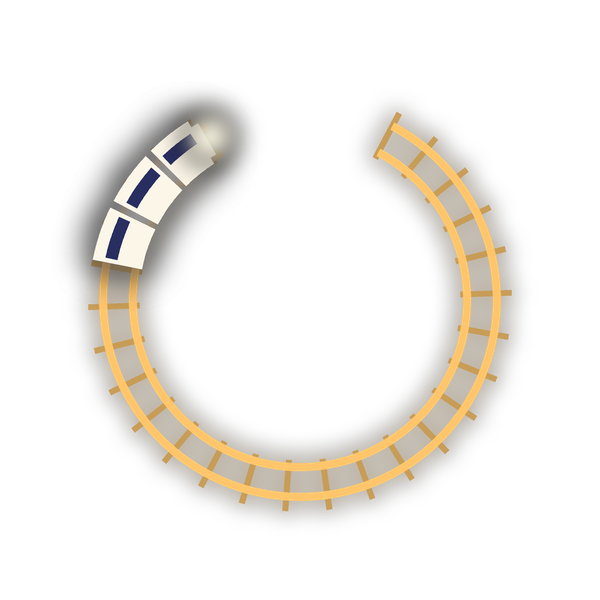

FocusTrack
Every focus session is a real train ride, on the real timetable, along the real line.
How it works
Pick how long you want to focus. FocusTrack finds a real train leaving from your station that runs about that long, from KTM Komuter and ETS in Malaysia to ICE, TGV and AVE in Europe. Board it, put your phone down, and watch it glide along the real track until you arrive.